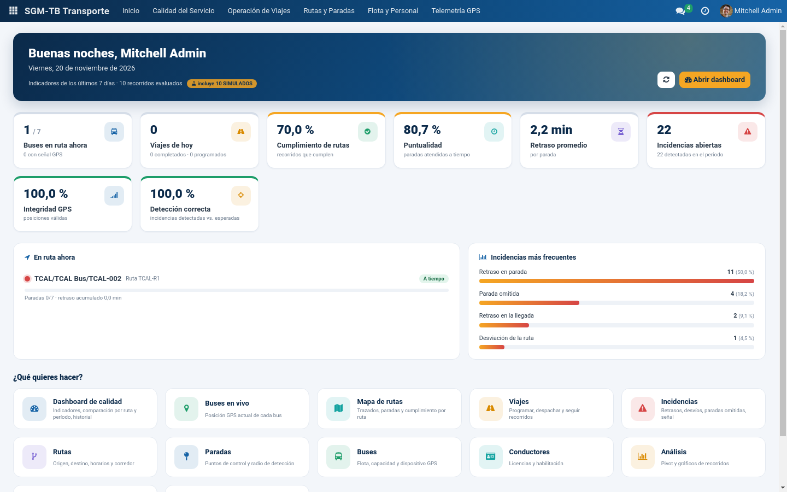
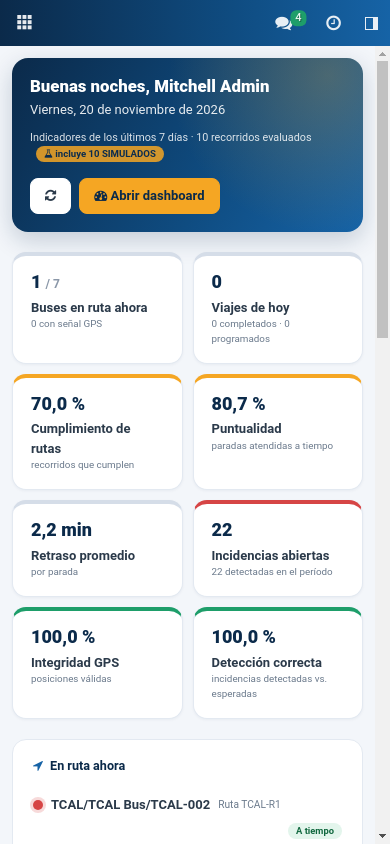
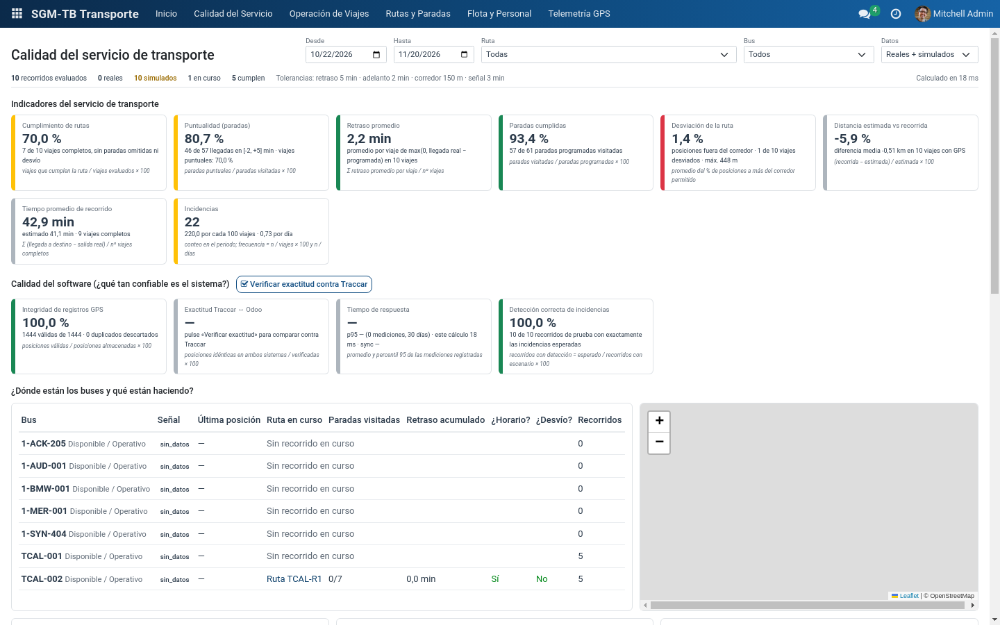
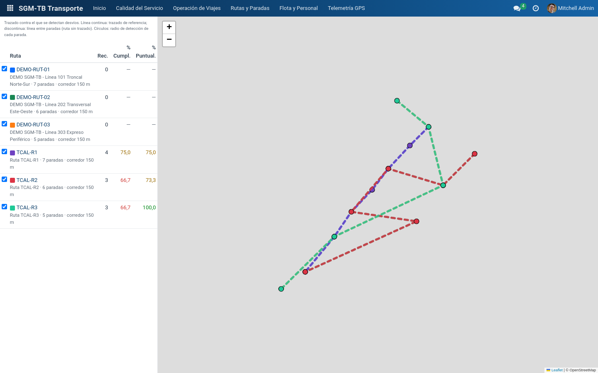

Odoo 16 + Traccar + Cloudflare Tunnel · evaluación objetiva del cumplimiento de rutas y de la calidad del software
Proyecto final integrador · Gestión de Calidad del SoftwareSin seguimiento centralizado no se sabe dónde está el bus ni si la ruta se cumple
El teléfono transmite por datos móviles; Odoo sincroniza, evalúa y presenta
Buses (Fleet), conductores, rutas, paradas, horarios y despacho de viajes
Posiciones sin duplicados, geocercas por tramo, señal, mapa
9 reglas, incidencias, 12 KPIs, dashboard, mapa de rutas, PDF
Inicio con indicadores en vivo, login y tema propios
Verificada de extremo a extremo contra un servidor Traccar 6.17 real (CP-24)
3 reportes por el protocolo de Traccar Client → Traccar → Odoo
| Posiciones recibidas y sincronizadas | 3 / 3 |
| Duplicados al re-sincronizar | 0 |
| Paradas atendidas por GPS | 3 / 3 |
| Exactitud Traccar ↔ Odoo | 100 % |
9 reglas con tolerancias configurables · incidencias idempotentes
| Regla | Criterio (defecto) |
|---|---|
| Retraso en parada / salida / llegada | > 5 min sobre lo programado |
| Llegada adelantada | > 2 min antes |
| Parada omitida · recorrido incompleto | sin llegada · destino no alcanzado |
| Diferencia de tiempo | |real − estimado| > 20 % y > 5 min |
| Desviación de la ruta | ≥ 3 posiciones seguidas > 150 m del corredor |
| Pérdida de señal GPS | hueco > 3 min dentro del viaje |
Parada programada 08:15, tolerancia 5 min, llegada 08:23
de retraso → incidencia «Retraso en parada» e incumplimiento de puntualidad (prueba CP-05)
Cada uno con fórmula, fuente, unidad e interpretación (docs/METRICAS.md) · ningún valor estático
Prueba CP-11: los valores del dashboard coinciden con las consultas directas a los registros, y cambian al registrar un recorrido nuevo.
Lo importante al entrar: buses en ruta, cumplimiento, puntualidad, incidencias y accesos por rol


Comparación por ruta y período, historial, Pareto · trazado contra el que se detectan desvíos


Escenarios demostrables en la defensa y la regla que explica cada resultado
| Caso | Resultado | Regla |
|---|---|---|
| Recorrido puntual | Cumple | Paradas en [−2, +5] min, destino alcanzado, dentro del corredor |
| Atrasado | Incumple | Salida +10 min → retraso de salida, de paradas y de llegada |
| Parada omitida | Incumple | El bus pasa a 110 m de una parada de radio 35 m |
| Desvío | Incumple | ≥ 3 posiciones seguidas a más de 150 m del trazado (máx. ~450 m) |
| Incompleto | Incumple | Destino no alcanzado → recorrido incompleto + paradas omitidas |
Plan de 10 recorridos simulados: detección correcta 10/10 (cada uno con sus incidencias esperadas).
Caja negra, caja blanca, integración, rendimiento, interfaz y en vivo · 25 casos en la matriz
| Consulta | 10 recorridos | 30 | 60 recorridos |
|---|---|---|---|
| Dashboard completo | 15 ms | 25 ms | 31 ms |
| Mapa del viaje | 3 ms | 3 ms | 6 ms |
| Reevaluar todos (hasta 8 664 posiciones) | 57 ms | 176 ms | 437 ms |
Quality Gate aprobado · Community 26.8 sobre el código propio (6 699 líneas)
| ISO/IEC 25010 | Evidencia |
|---|---|
| Adecuación funcional | 22 RF trazados a pruebas; fórmulas verificadas contra registros |
| Eficiencia de desempeño | Dashboard 31 ms con 60 recorridos |
| Fiabilidad · Seguridad | 0 duplicados GPS, exactitud 100 %; RBAC, webhook con Bearer |
| Mantenibilidad | 4 módulos desacoplados, cobertura 97 %, SonarQube A |
Severidad × alcance de los 10 defectos encontrados · 5 concentran el 77 % del impacto
| Defecto | Impacto | % acum. | |
|---|---|---|---|
| D-01 Paradas visitadas marcadas omitidas | 25 | 22,9 | |
| D-07 Pruebas de navegador saltadas en silencio | 20 | 41,3 | |
| D-05 Servidor sin ruta de addons | 15 | 55,0 | |
| D-02 Rol Consulta sin acceso a buses | 12 | 66,1 | |
| D-08 Mapas dependientes del CDN | 12 | 77,1 | |
| D-03, D-09, D-06, D-10, D-04 y otros | 25 | 100 |
Problema → causa → corrección → verificación → estándar
Causa: con intervalos GPS largos ninguna muestra cae dentro del radio
| Indicador | Antes | Después |
|---|---|---|
| Detección correcta (60 recorridos) | 90 % | 100 % |
| Paradas detectadas a 30 s | 77,8 % | 100 % |
Acción: geocerca por tramo + estándar de Traccar Client a 30 s
Causa: dependencia no verificada, CDN y una función con 9 reglas
| Indicador | Antes | Después |
|---|---|---|
| Pruebas de interfaz ejecutadas | 1 / 5 | 5 / 5 |
| Mapas sin Internet | 0 / 3 | 3 / 3 |
| Complejidad de evaluar_viaje | 46 | ≤ 15 |
| Bugs / vulnerabilidades | 3 / 3 | 0 / 0 |
Un caso de cumplimiento y uno de incumplimiento, con datos de Traccar Client
Bus con dispositivo GPS → ruta con ≥ 4 paradas y horarios → viaje programado e iniciado
Teléfono en datos móviles por el túnel: el bus en el mapa y las paradas «Atendida (GPS)»
Finalizar → Cumple / Incumple, incidencias automáticas, informe PDF y KPIs actualizados
Mapas operativos sin CDN · prueba en vivo con Traccar efímero (~40 s) · 10 escenarios simulados identificados como tales
¿Preguntas?